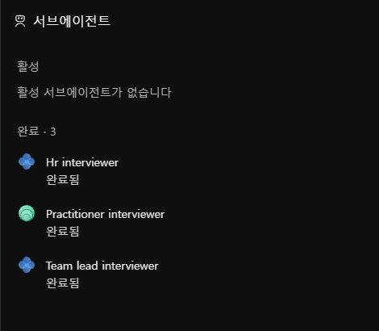
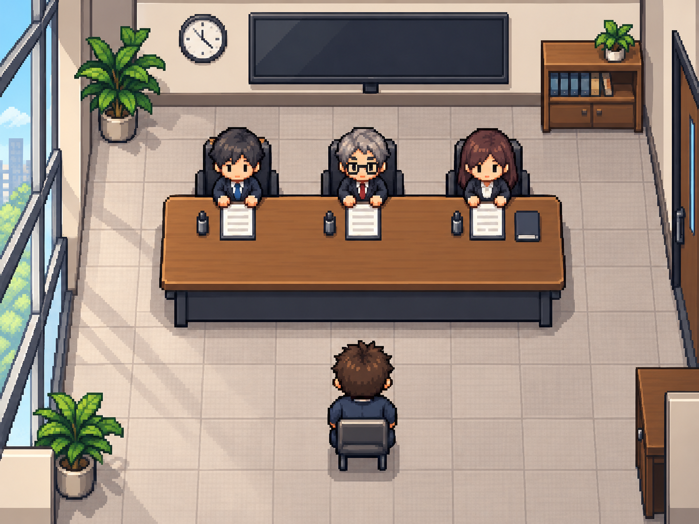

INTERVIEW ROOM
오늘의 면접을, 여기서 먼저.
- 준비
- 질문
- 답변
- 피드백
가상 지원자의 실제 Work 실습 기록을 체험합니다. 새 AI 평가를 실행하지 않습니다.
CONNECT YOUR CHATGPT PLAN
ChatGPT로 로그인하고 내 구독으로 연습합니다
별도 API 키·자동 API 결제 전환 없음. 본인 PC에서만 연결합니다.
PC 실행 여부를 확인하고 있습니다.
한도 오류가 나면 중단하며 별도 API 키나 다른 결제 방식으로 우회하지 않습니다. 추가 크레딧 사용도 원하지 않으면 ChatGPT 설정의 앱 사용량·크레딧 허용을 확인하세요. 이 앱이 결제 설정을 변경하거나 크레딧을 구매하지는 않습니다.
공고·경험 설정지원할 업무와 실제로 맡았던 일을 정리해 주세요.
처음에는 가상 예제가 들어 있습니다. 본인의 사실로 바꾸고 오른쪽 질문에 답합니다. 자동 재시도 없음 · 90초 대기 제한 · 이미 사용한 구독 사용량은 되돌릴 수 없음.
입력과 결과를 서버 파일이나 브라우저 저장소에 보관하지 않습니다. 새로고침하면 사라지므로 필요한 기록은 직접 내보내 주세요.
START IN WORK
내 답변은 ChatGPT Work에서 연습합니다
- 공고와 경험을 바꿉니다
위 ‘공고·경험 설정’의 가상 예제를 본인의 사실로 바꾸고 요청문을 복사하세요.
- 새 대화에서 Work를 선택합니다
ChatGPT 열기 ↗에서 붙여 넣고, 첫 질문에 답합니다.
- 실제 작업자 3개를 확인합니다
활동 → 서브에이전트에서 인사·현업·팀장에 해당하는 작업과 개별 최종 응답을 확인하세요. 이름만 세 개 적힌 일반 답변과 구분합니다.
이 페이지는 Work 대화를 자동으로 읽지 않습니다. 기존 ChatGPT 사용량을 소모하며 기능 제공 대상 계정이 필요합니다.


첫 질문
지원한 이유와 이 직무에 연결되는 본인 경험을 설명해 주세요.
이번 질문 확인·수정
질문을 읽고 가상 첫 답변을 불러오세요.
면접 피드백 노트답변 뒤에 근거·보완점·꼬리질문을 확인합니다.
세 면접관의 피드백
역할별 20점 만점 · 합격률 아님이번 탭의 연습 기록
동일한 공고·경험·질문일 때만 비교합니다. 점수 차이는 실제 면접 실력 향상률이 아닙니다.
| 회차 | 인사 | 현업 | 팀장 | 평가 방식 |
|---|
이 면접실의 평가 방식과 확인한 범위
픽셀 캐릭터는 역할을 구분하는 안내용입니다. 표정·시선·음성은 분석하지 않습니다. 내 구독 면접은 서로 다른 역할 지침으로 별도 모델 요청 세 개를 병렬 실행합니다. Work 내장 서브에이전트를 호출하거나 서로 다른 기반 모델의 독립성을 검증하는 방식은 아닙니다. 기록된 예제는 과거 Work의 실제 세 서브에이전트 실습이며, 현재 사용자의 새 답변 점수가 아닙니다.